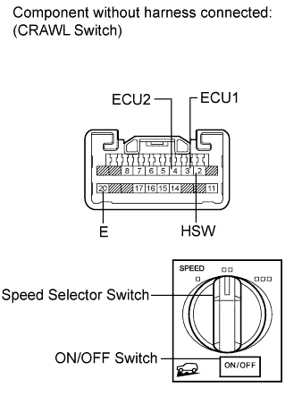

CRAWL SWITCH > INSPECTION |
| 1. CHECK SUSPENSION CONTROL SWITCH (CRAWL SWITCH) |
 |
Measure the resistance according to the value(s) in the table below.
| Tester Connection | Switch Condition | Specified Condition |
| 3 (ECU1) - 20 (E) | Speed selector switch: MID | 10 kΩ or higher |
| Speed selector switch: HI | ||
| Speed selector switch: LO | Below 1 Ω | |
| 4 (ECU2) - 20 (E) | Speed selector switch: MID | 10 kΩ or higher |
| Speed selector switch: HI | Below 1 Ω | |
| Speed selector switch: LO | ||
| 2 (HSW) - 20 (E) | ON/OFF switch: Pressed | Below 1 Ω |
| ON/OFF switch: Not pressed | 10 kΩ or higher |